Context
Gideon is an AI receptionist for plaintiff personal-injury law firms. It answers inbound calls, qualifies and signs leads, then works the phones for months chasing providers, medical records and adjusters, writing everything back into the firm’s case management system.
The users are case managers and paralegals carrying 60–120 open files. They’re judged on cases moving, not cases understood, and they’re mostly not in the product. They log in to supervise work that has already happened, which makes the interface a place to decide whether to trust work rather than a place to do it.
Product Designer and Design Generalist
July – September 2026
CTO, CEO, me (Product Design), and full-stack engineers part-time
Product planning, design foundations, UX research, UI design, UX audits and AI-assisted product development
Design Approach
When I joined, the product was one big mess to fix. It was three months old, with vibe-coded layouts and a dozen overlapping sections across the app. The UX copy was mostly AI slop or dev language. The features on offer were yet to be finalised. There was no brand or visual system in place, and no design system to use.
It was the opportunity of a lifetime — to take part in product planning and set up the branding, visual design, UX foundations and UI design of a whole product, autonomously. But doing all of that as a one-person design team is an invitation for more mess. So before designing anything, I set up the structure of my process and workflows, and how I wanted to tackle each problem at hand.
What was missing when I arrived.
Unclear feature claims
No design system
No information architecture
No brand or visual guide
Unclear user journey map
Competitor Analysis
I conducted a thorough competitor research covering the incumbents, the funded challengers, and the answering services buyers were actually comparing us against. Every figure was labelled with its source, because almost nothing in this category is independently reported.
Two findings changed how we thought about the market. Our nearest competitor was behind us on capability but ahead of us on story: they had named a category and listed their integrations in plain language, which is why buyers found them first. The honest limit of the research was that it was desk research alone. No user contact.
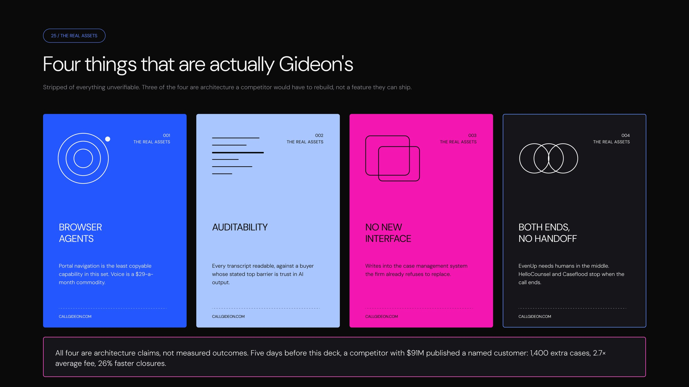
User Journey
I mapped the case manager’s journey end to end, from a lead arriving to a case settling. For each stage, what the AI handles, where the person takes over, and where the experience quietly breaks was clearly defined, based on the feature claims we finalised.
Gideon front-loads. It does not finish the case.
A personal injury file runs through five stages. Gideon takes nearly all of the first two, shares the third, and hands the rest back to the firm. Flip the lens to see the work move.
The Firm
Who Does It
What They Approve
What Still Needs a Person
Gideon
What Runs Unattended
What It Hands Back
Information Architecture
The app had grown into a complex surface. It had a sidebar with 10+ sections and a dashboard layered over nested modals, tabs inside tabs, and the same object reachable by four different routes. None of that structure was documented.
The underlying problem was that states had been drawn as places. A tree can only show what contains what, but states don’t contain each other — they move between each other. So every state had to be redrawn once for each route that led to it, and roughly a third of the architecture board turned out to be duplicates.
Separating the product tree from the state machines is what made the rest of the work possible.
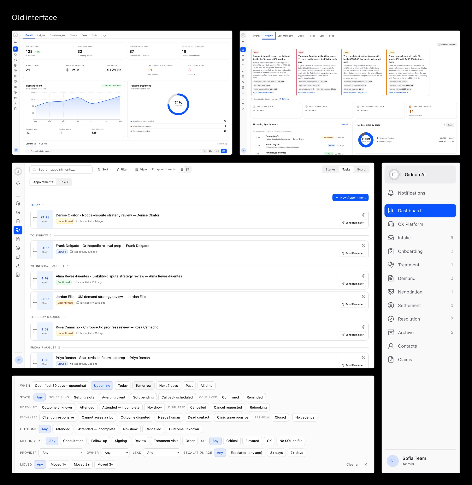
Information Architecture
- Import CSV
- Add Lead
- Call Modal
- ListLead Modal
- TasksLead Modal
- Kanban
- CardLead Modal
- Board
- New IntakeReviewQualifiedSignedLost
- StagesLead Modal
- Appointments
- Calendar ViewNew Appointment
- Monthly ViewWeekly ViewDaily View
- List View
- Appointment CardAlso in calendar views
- View DetailsEdit Appointment
- View CallCall Modal
- TasksLead Modal
- CompletedView CallCall Modal
- FailedMark as DoneCall Modal
- Needs ApprovalApproveCancelMark as Done
- ScheduledRun NowCancelMark as Done
- OngoingCancel
- Add Appointment
- Providers
- Firm Profile
- Case Types
- Supported case typesQualification criteria
- Qualified actionDisqualified action
- Intake Call Flow
- Main AgentSpecialist AgentPII AgentClosing Agent
- Escalation & Transfer rules
- Lead Journey
- Journey stagesHandled by firm or by Gideon
- Templates
- Email templatesSMS templatesCall prompts
- Cadence Defaults
- Confirmation defaultReminder defaultFollow-Up default
- Team & Roles
- Integrations
- Billing & Usage
Lead Modal
From Dashboard, Settlements, Intake List, Tasks and Card, and Treatment Stages and Tasks
- Overview
- IntakeTreatmentSettlements
- Preview
- Activity
- Logs
Call Modal CX Platform
From View Call, and Completed or Failed tasks
- Call transcript
- Brief
New Appointment
From Monthly, Weekly and Daily calendar views
- New Appointment
- Log a past visit
- Attended
- Outcome Unknown
- No-Show
- Follow-Up
Edit Appointment
From View Details
- Reschedule
- Cadences
- Carry forwardEdit Cadences
- Appointment Details
- DateTimeTimezoneDuration
- Add ConfirmationAdd Follow-Up
- Cancel Appointment
- View DetailsDelete
- Change Status
- UnconfirmedAdd Appointment Schedule
- Ongoing ConfirmationCancel Appointment
- RescheduleCarry Over CadencesEdit Cadences
- Escalated
- Confirmation EscalationRescheduleCancel
- Follow-Up EscalationCancel Appointment
- ConfirmedAdd/Edit Follow-Up Cadence
- Add/Edit Confirmation CadenceCancel Appointment
- AttendedDelete Appointment
- Outcome Unknown
- No-ShowFollow-Up
Status can move across branches
Problem Solving
A personal-injury case runs on treatment. The client sees a doctor, a chiropractor, an imaging centre — often for months — and every one of those visits has to be booked, confirmed, chased when it slips, and written down. That record is the case: when the appointment was made, what kind it was, when and where it happens, which provider it is with, and what happened afterwards.
All of it has to live somewhere. Gideon is that somewhere — the CRM and the database the firm works out of, which is also what makes the automation possible. Two surfaces do the writing: New Appointment and Edit Appointment. Both were mine to fix, and this is where the work went.
The Appointment Modals
The two modals as I inherited them — switch between them.
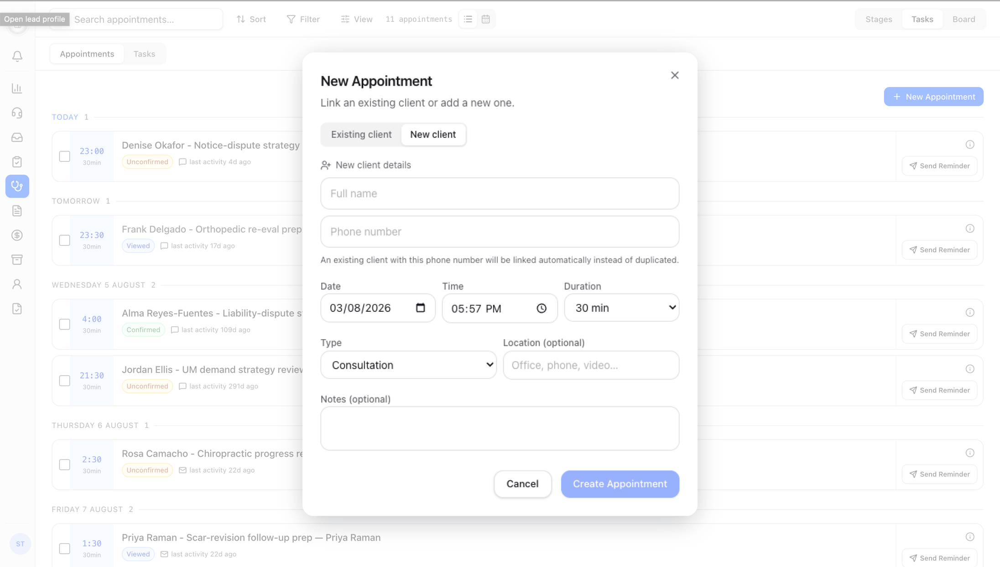
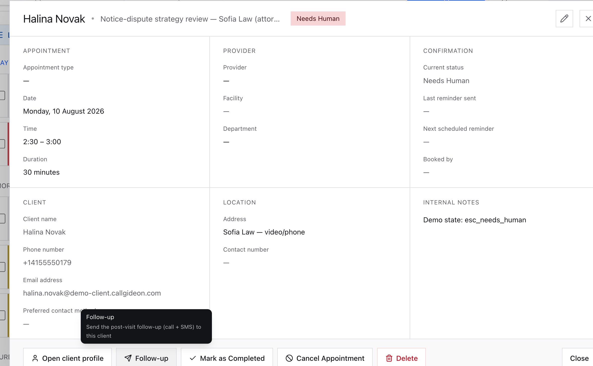
The New Appointment Modal
one or two lines framing what was wrong and where the five iterations landed
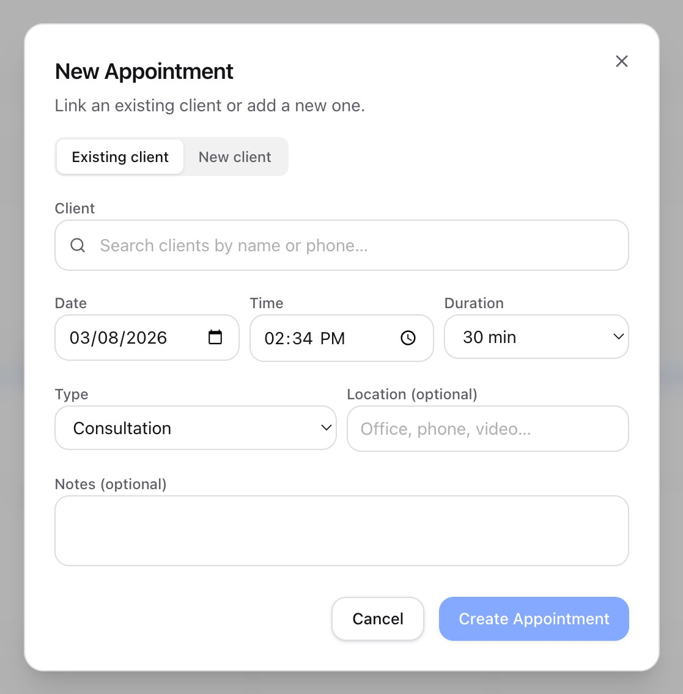
1 2 3What was wrong with it
a line on how you read the existing layout before touching it
-
Different layout, different fields, different logic — depending on whether you were creating or editing.
-
What you could set at creation and what you could change later didn’t match, so a record was only ever complete after a second pass.
-
No cadences, no treatment plan, no way to choose the channel a reminder would go out on.
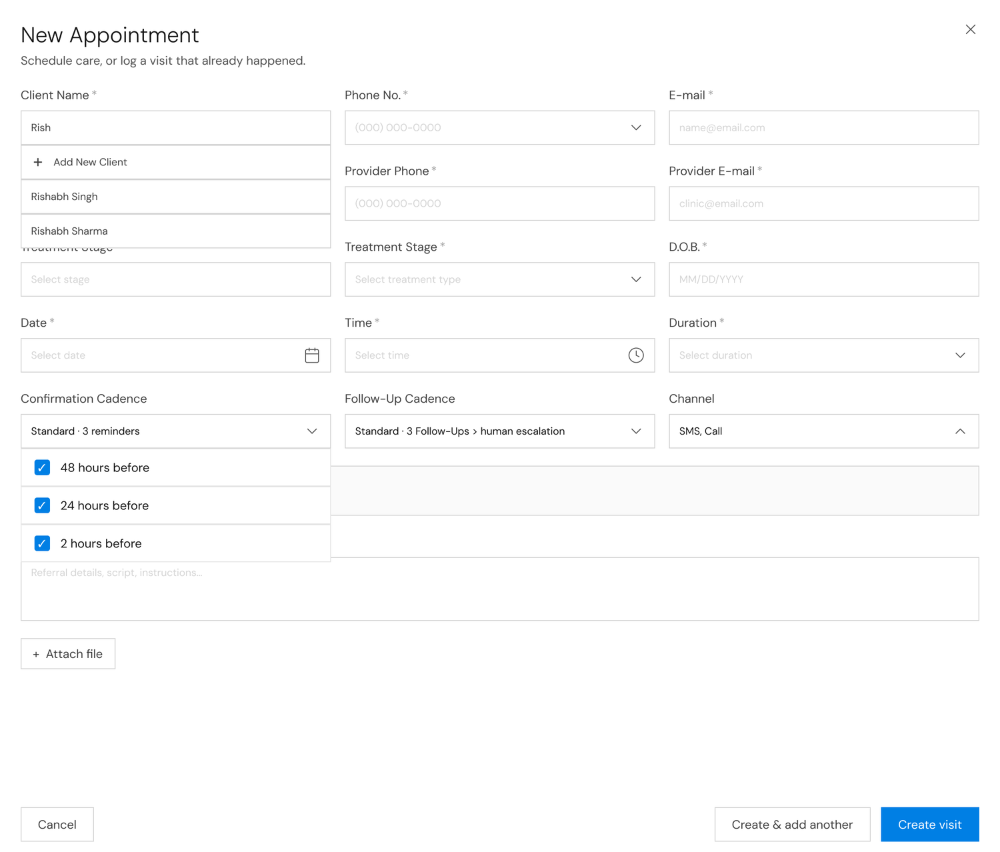
Complementing Edit Appointment Modal and Adding Cadences
two changes in one pass: New Appointment was rebuilt to match Edit Appointment, so the two screens finally agreed on what an appointment is — and cadence arrived at creation, so booking a visit and chasing the client stopped being separate jobs
Cadence — the layouts explored.
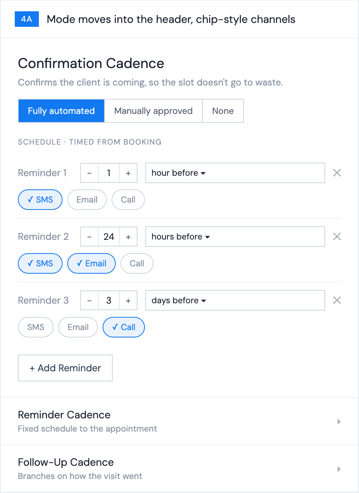
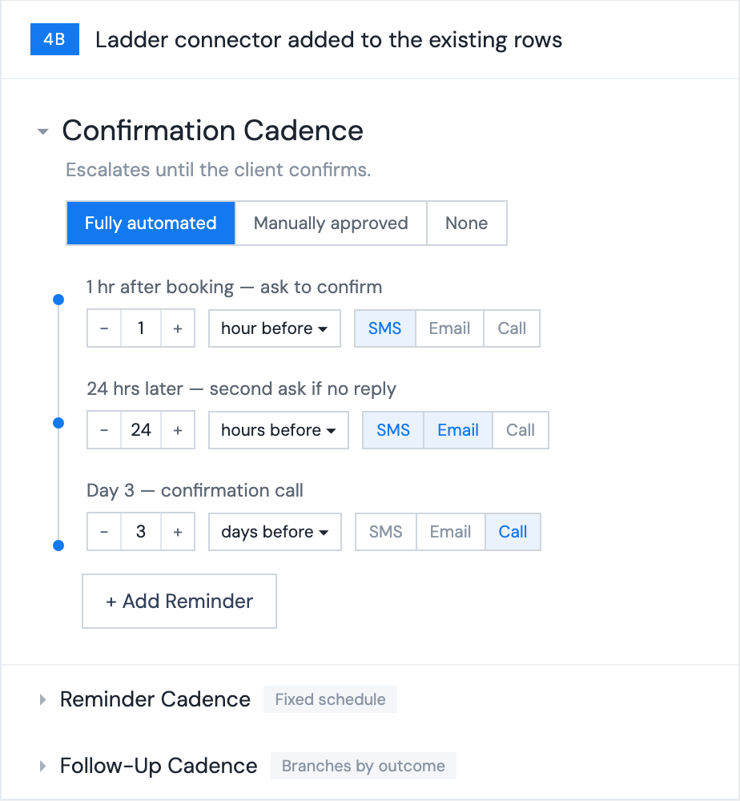
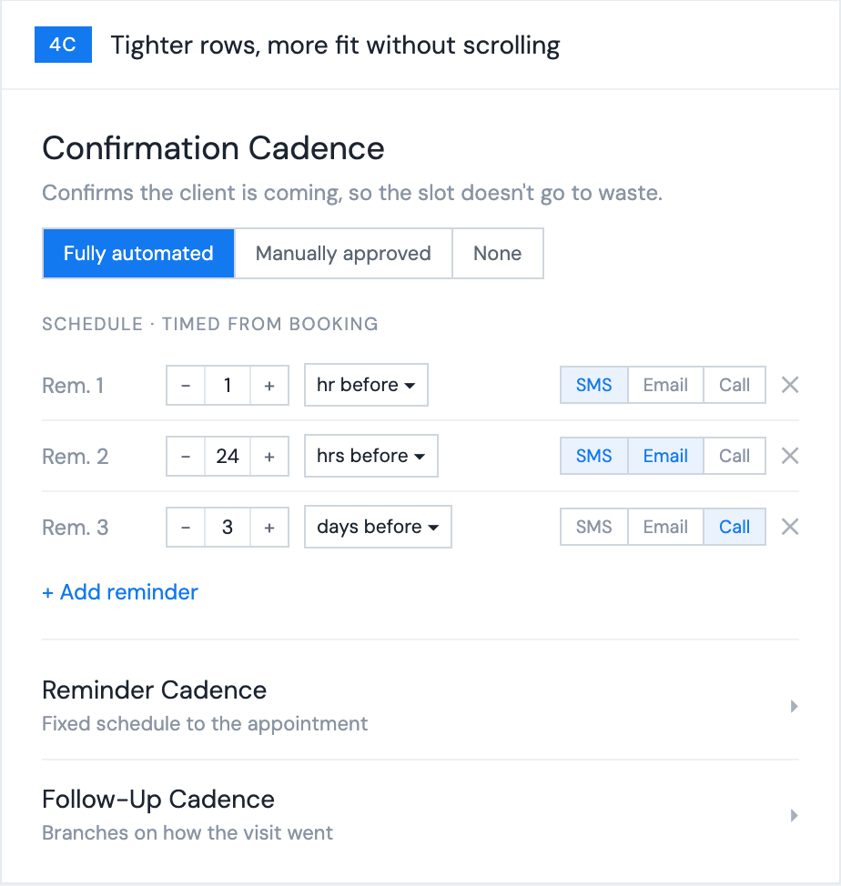
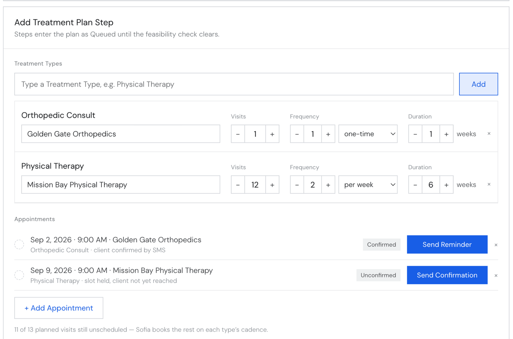
Adding Treatment Plan
a client in treatment attends a course of visits, not one — so the modal learned to describe the course and generate the appointments from it
Final Version
-
Schedule a visit ahead, or record one that already happened — New Appointment and Log a Visit are the same screen with the same fields, not two places to learn.
-
Send Confirmation Now stages the call against this appointment immediately; it goes out shortly after you save, tagged so you can see it is queued rather than guessing.
-
Name, phone and email is all a new client needs here. Everything else belongs on the client record, so booking never stalls on a form.
-
Providers are searched and created inline, so an unfamiliar clinic does not become a reason to stop and go somewhere else.
-
Search the ones already in use, or add a new one on the spot — no fixed list to petition someone to extend.
-
Referral detail, script and instructions stay attached to the appointment and to the client, so the next person picking it up has the context.
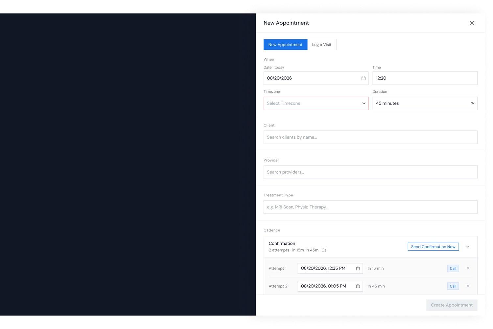
1 2 6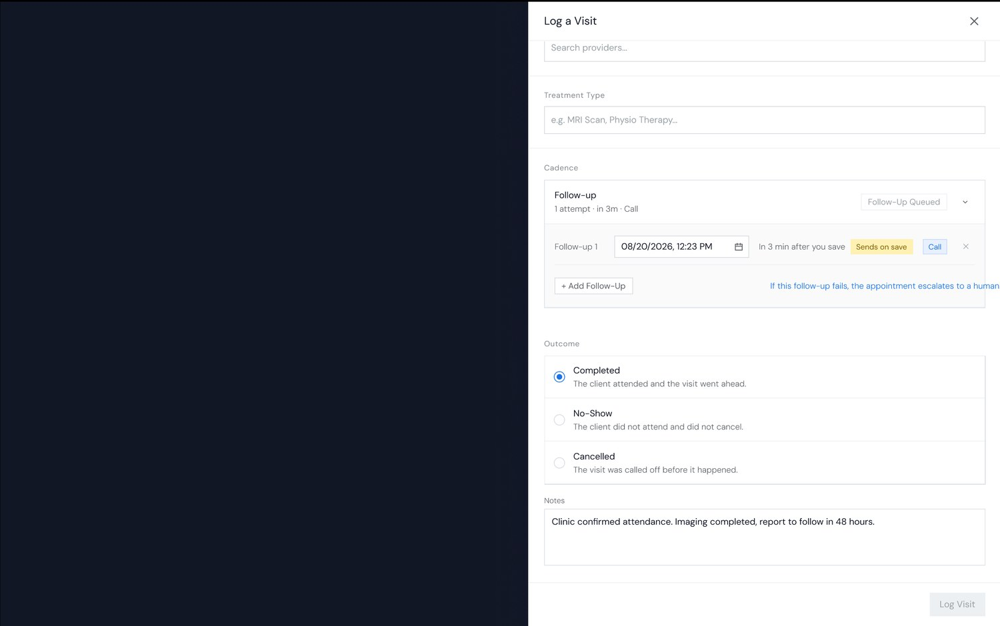
1 6Adding what the modal did not have: a client, a provider, a treatment type — each without leaving the form.
The Edit Appointment Modal
If New Appointment is where a visit is written down, Edit Appointment is where it is supervised — and an appointment is not one thing but a sequence of states. Before it could be redesigned, that sequence had to be named.
An appointment moves through confirmation, then settles on an outcome.
The first three are one track — the chase. The last four are where it lands. Everything the modal shows is decided by which of these an appointment is currently in.
What was wrong with it
-
Six panels of inputs, most of them empty on every record. The handful that mattered were buried among the ones that never got filled.
-
Reminders were fixed presets. No way to name a date and time, no way to add an attempt, no way to see what had already gone out.
-
SMS and email sat in the form as if they worked. Only calls were wired up, so choosing anything else silently did nothing.
-
Different layout, different fields, different order. You learned the product twice, and still could not tell what was editable or why.
-
The one thing a supervisor needs to correct — where this appointment actually stands — was the one thing they could not touch.
-
If a client needed chasing right now, the modal had no way to do it. You saved, left, and went looking for another surface.
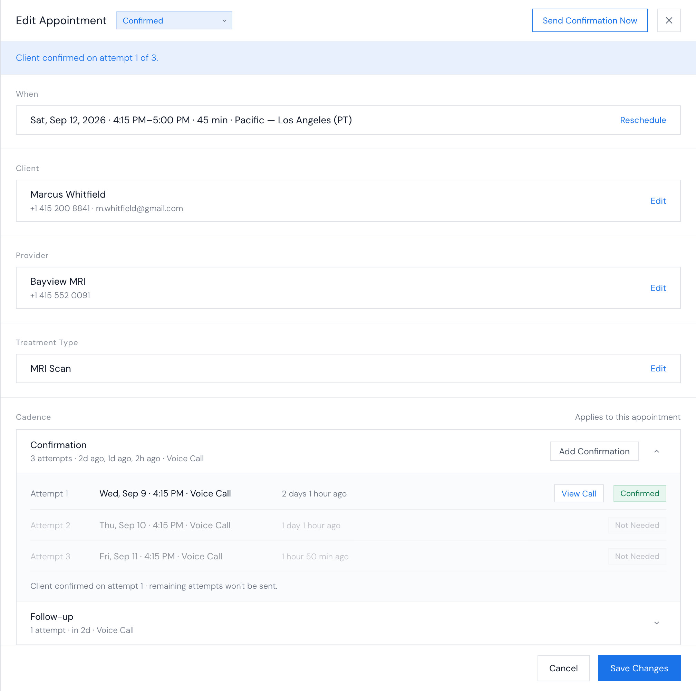
1 2 3 4 5 6What it became
-
When, client, provider, treatment type. Everything that was never filled came out, and what is left reads in one pass.
-
Each attempt carries a real date and time you can set, and you can add as many as the case needs. What has already gone out is shown back, with its result.
-
SMS and email came out until they work. The form no longer offers a choice the product cannot keep.
-
Identical layout and field order, so creating and editing are one thing learned once — and what is editable is obvious because it never moves.
-
Set where the appointment stands and the rest responds: confirmation disappears once a visit has happened, follow-up appears in its place.
-
Send Confirmation Now and Get Follow-Up Now stage a call against this appointment immediately, without leaving the record.
The Lead Modal
what the Lead Modal is, what was wrong with it, and what changed
Other Design Changes
the smaller surfaces — what changed across the rest of the app
Dashboard
Intake
Treatment
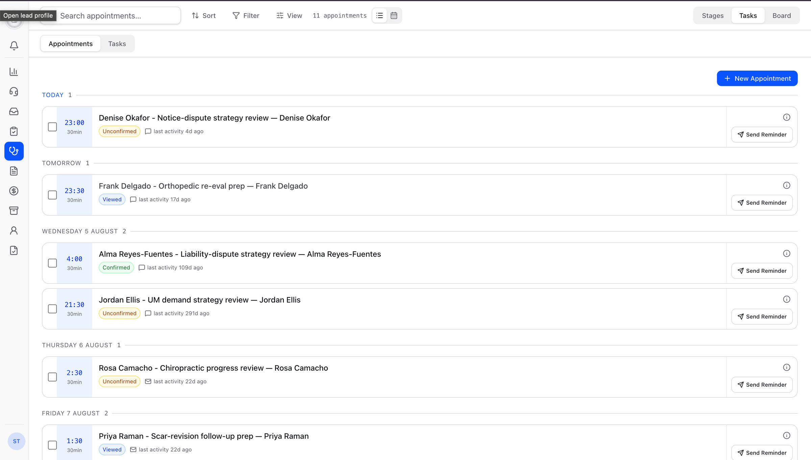
Settings
Product Decisions
Four decisions that shaped the product more … — full sentence goes here
Setting Up the Design Foundations
Before any screen, the product needed something to stand on. I ran the competitor analysis, mapped the information architecture — separating the product tree from the state machines — and wrote the user personas and the end-to-end journey map. Then the system underneath it: tokens and variables for colour, type and spacing, and the components every surface downstream was assembled from.
Rebuilding the Lead Modal
The Lead Modal is the profile for every … — full paragraph goes here
Simplifying Creating and Editing Appointments
Two modals for one object meant two designs, two field sets, and edits with no clear home. Rather than align them, I rebuilt both as a single modal with a Create and an Edit mode — identical layout, one data model underneath.
Keep two modals, align them
- Least engineering — nothing structural changes.
- Two things to keep in sync forever; the gap comes back.
- Still two mental models for one object.
One modal, two modes
- Create and edit are the same screen — learn it once.
- Every field has one home; edits are findable.
- More upfront work to unify the data model.
UI Design and UX Foundations for Other Sections of the App
Design System
Originally, screens were assembled from five borrowed libraries with raw hex fills and detached text, so the foundations for colour, type, spacing and states had never been set. Since the product was very early stage, I got the opportunity to build the brand’s design foundations from scratch — and the design system was one of the things I loved building.
I built variables for colour, type and layout, a single type ramp, and a small set of real components built as proper variant sets. I built it from the screens I was already producing rather than up front, so nothing in it is speculative. Every component exists because a screen needed it.
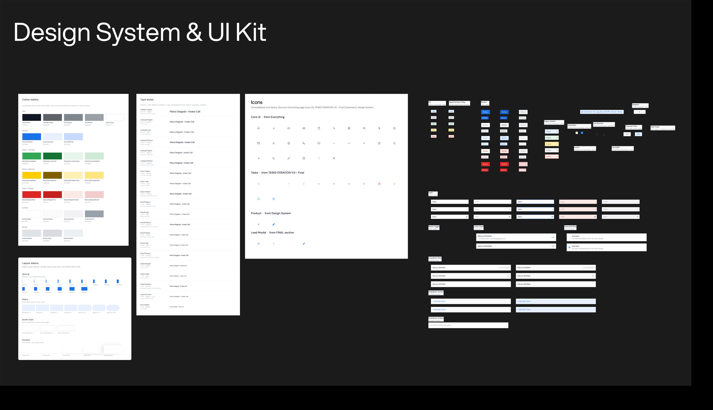
How Features Shipped
At Gideon, design and delivery ran as one loop. I made the product decision, wrote the spec, ran it through Claude Code against the existing codebase, my CTO reviewed the PR and merged it. Once merged, I would review the running product and iterate further. This happened on multiple occasions, when we had to fix multiple structural issues with such a small team and time constraints.
Also read — What I learned from merging 100 PRs in a day to prepare a product for a client demo.
I didn’t write the code. Everything on either side of it was mine, and shipping was part of the job, not a handoff at the end of it.
The Pivot
The original bet was that PI firms would … — full paragraph goes here
The company concluded the market and product … — full paragraph goes here
It taught me something I’d rather have learned … — full paragraph goes here
Two months. One product that didn’t survive its market, and a way of working that did. Gideon taught me to name a thing before drawing it, to design for people who log in to check work rather than do it, and to carry my own decisions through to merged code instead of handing them over.
Product Designer — structure, IA, journey … — complete this line
Figma · FigJam · Figma Slides · Claude Code … — complete this line
Product and design decisions mine. Implementation … — complete this line
Sharvil Naik · sharvilnaik17@gmail.com · portfolio URL